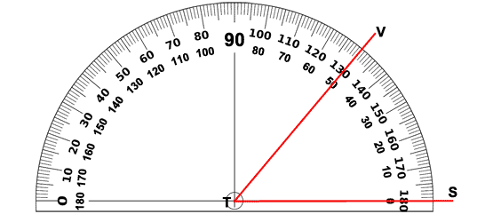

What You Should Know - Vernier Elementary Energy Efficiency: Keep Our City Cool
 Important Vocabulary
Important Vocabulary
- Pie Chart - a type of graph where a circle is divided into sections that represent a part of the whole
- Degree - a unit for measuring angles
- Protractor - a tool for measuring angles
- Angle - two rays that share an endpoint
- Ray - a part of a line that has an endpoint and extends infinitely in one direction
- Benchmark Angle - an angle with a measure that is easy to recognize such as 90° or 180°
What Is an Urban Heat Island?
An urban heat island is an urban area where the temperature is higher than the surrounding rural areas because of the things humans do. Humans build cities with materials that are impermeable or materials that do not allow water to pass through easily such as concrete, asphalt, and metal. Humans also build buildings and roads typically made out of materials that absorb the sun's energy and radiate that back out as heat; these materials often replace vegetation, which cools the environment. The United States Environmental Protection Agency (EPA) estimates that on a summer day, urban temperatures can increase by 5 degrees Celsius or 9 degrees Fahrenheit compared to the surrounding rural air temperature because of the characteristics of these materials. The temperature differences between urban and rural areas are most notable at night due to the slow release of heat from city structures.

Challenges of Rising Temperatures
When cities are hotter, the demand for air conditioning increases. When we have heat waves with above-average temperatures combined with higher city temperatures, the demand from homes and businesses for cooling can overload the system. When more power is being used than what the system can make, local governments are often forced to shut off electricity at certain times in specific areas; these shut-offs are called planned rolling blackouts. Local governments use rolling blackouts only in the most serious situations to avoid total system shutdowns known as blackouts. Blackouts are unplanned events where the system becomes overloaded and fails. Blackouts are dangerous and can lead to injuries or even death, especially for those dependent on electricity like the elderly, infants, and people with health issues.

In addition to potential energy blackouts from overloading the electrical system, most of our electrical power comes from fossil fuel sources (natural gas, coal, and petroleum). Higher demand on the system means the release of more than normal levels of air pollutants and greenhouse gas emissions. The chemicals released into the air can get trapped in the city and build up, which can cause serious health issues for the sick, young, elderly, and those with respiratory issues.

Green Buildings
 Organizations have been formed to help encourage more sustainable building practices. The U.S. Green Building Council created Leadership in Energy and Environmental Design (LEED) ratings to help encourage greener building practices. Construction companies have begun experimenting with different building materials including more reflective material, lighter colors, and adding more vegetation to increase energy efficiency and lower costs. Green roofs are one of the many common designs in commercial construction because they help fight the urban heat island effect. They are roofs that are partially or completely covered with plants. They have longer lifespans and manage storm-water better than traditional roofing materials.
Organizations have been formed to help encourage more sustainable building practices. The U.S. Green Building Council created Leadership in Energy and Environmental Design (LEED) ratings to help encourage greener building practices. Construction companies have begun experimenting with different building materials including more reflective material, lighter colors, and adding more vegetation to increase energy efficiency and lower costs. Green roofs are one of the many common designs in commercial construction because they help fight the urban heat island effect. They are roofs that are partially or completely covered with plants. They have longer lifespans and manage storm-water better than traditional roofing materials.
Converting Degrees Fahrenheit to Degrees Celsius
Degrees Celsius or the centigrade scale is the international system of measurement of temperature. The centigrade scale is used by all countries in the world except for the United States, Liberia and Myanmar. The system has assigned 0 degrees Celsius to the temperature at which water freezes, and 100 degrees Celsius to the temperature at which water boils. To convert Fahrenheit temperature to Celsius temperature or vice versa, you can use the equations below:
f °Fahrenheit to c °Celsius: (f - 32) ÷ 1.8 = c
c °Celsius to f °Fahrenheit: (c × 1.8) + 32 = f

How Is a Protractor Used?
A protractor is the tool that is used to measure angles. A protractor measures in degrees.
To measure an angle, put the endpoint of the angle in the center point of the protractor. One ray should always go through the 0° point on the protractor. The place where the other ray crosses is the measure of your angle. Many protractors have two sets of numbers and you have to figure out which value to choose. Since we know this angle is less than 90°, we would choose the measurement of 50° for the angle shown.

How Can You Measure Angles in a Pie Chart?
Each section of a pie chart is made up of two rays that share the center of the circle as an endpoint. A pie chart should include a title and label for each piece of the pie.
There are 360° in a full circle. There are 180° in a half circle. There are 90° in a quarter of a circle, and so on. To determine how many degrees will be in each piece of your pie chart, you will need to change your fractions into degrees. To do this, multiply each fraction by 360. This will tell you the number of degrees in each piece of your pie chart. For example:
5/10 × 360/1 = 1800/10 = 180
Can you figure out how many degrees will be in a piece of your pie chart that is 310?

Connecting Degrees and Fractions
A full circle is made up of 360°. Each piece of your pie chart is a fraction with 360 as the denominator and the number of degrees for that piece as the numerator. You can simplify the fractions by dividing the numerator and denominator by the same number to see what fractional part of the whole circle the piece represents. If the fractions are added together, they will be equal to one whole.
180/360 ÷ 180/180 = 1/2
90/360 ÷ 90/90 = 1/4
45/360 ÷ 45/45 = 1/8

Career Connection and Real-World Application
Environmental Careers
Information about the amount of heat that is radiated by different surfaces is used by Urban Planners, Landscapers, and Environmental Scientists. An Urban Planner creates and reviews plans for new development. An Urban Planner also finds ways of improving an area with ideas such as adding more green space. An Environmental Scientist collects and analyzes data from the environment and uses the data to predict trends and fix problems.